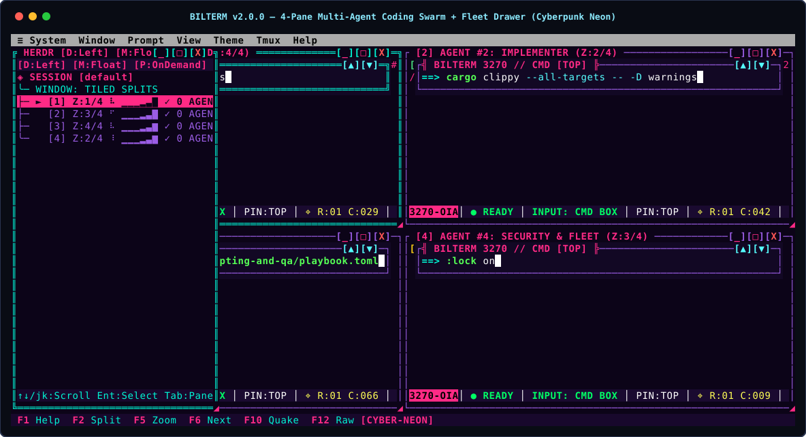
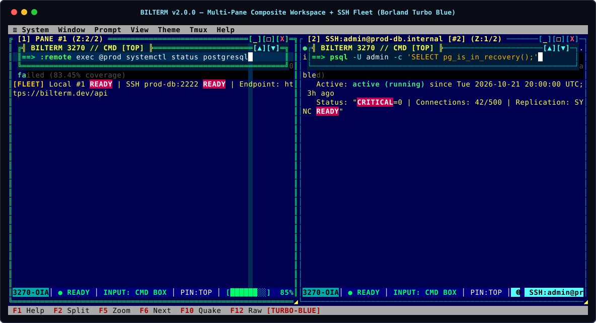
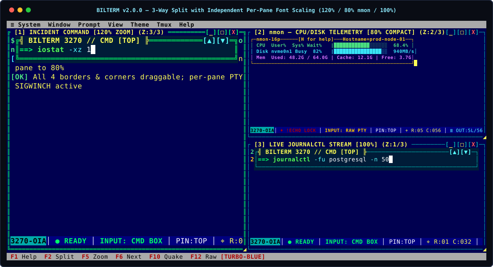
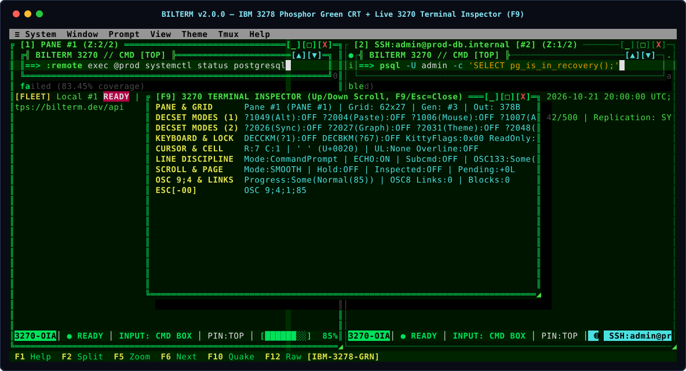
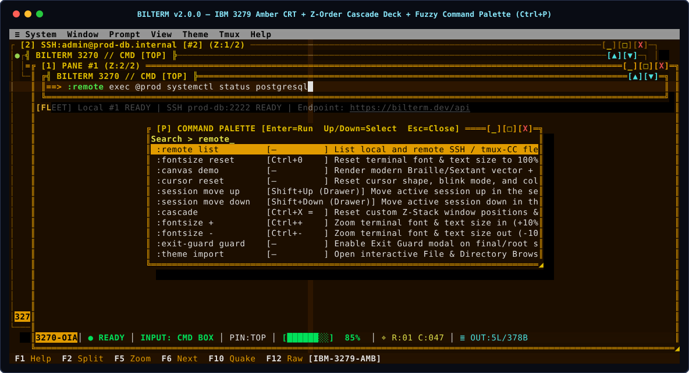

Agent-Aware Navigator (F7)
A slide-out/push-out left sidebar (:drawer style navigator) displaying workspace hierarchy, sessions, and live agent status dots ( Working, Idle, Blocked, Done, Errored).
IBM 3270 × Borland Turbo Vision × Autonomous AI Swarms
A retro-futuristic terminal multiplexer, native desktop GUI terminal, and AI agent coordination workspace in Rust. Zero SIGWINCH thrash, 2D rectangular block copy, and resilient remote SSH/tmux sessions.
curl -fsSL https://raw.githubusercontent.com/bsommers/bilterm/main/scripts/install.sh | bash
Linux & macOS supported (Windows via source/cargo). Installs pre-built binary to ~/.local/bin with manpage, bash/zsh/fish completions, and desktop icon.
git clone https://github.com/bsommers/bilterm.git && cd bilterm
cargo build --release && install -m 0755 target/release/bilterm ~/.local/bin/bilterm
A slide-out/push-out left sidebar (:drawer style navigator) displaying workspace hierarchy, sessions, and live agent status dots ( Working, Idle, Blocked, Done, Errored).
Direct inter-agent communication across terminal panes: :agent send <name> <msg>, per-agent bounded mailboxes (64 max), and 3 delivery modes: mailbox, nudge (when shell is idle), and file (for large payloads).
Instant global search across agents, active and saved sessions, and command history: :find agent|session|history <query> or Ctrl+Alt+F. Automatic zero-trust secret masking protects tokens and credentials.
Switch between 8 built-in visual profiles via :appearance: Obsidian (modern dark slate, fresh default), Legacy (Borland Blue), Midnight, Arctic, Liquid, Amber, Synthwave, and Solarized. Plus :mode standard|minimal|zen.
Remote sessions via :ssh-tmux <host> [session] maintain state across connection drops. Automatic reconnection with exponential backoff, capture-pane hydration upon reconnect, and exit hold banners.
Pinnable and dockable workbench windows: :fonts live typography preview, :commands execution history workbench, and :script / :studio Script Studio with multi-line editor, live recorder, and step debugger.
Visualize and pack multi-session container hierarchies with :sessions map in Braille/UTF-8 box-drawing or native GUI vector rendering. Move panes across sessions with mouse drag-and-drop or :window move.
Singleton daemon supervisor with automatic startup and stale-lock recovery. Manage named daemons via :daemon list|status|start|stop|prune. Drive headless sessions over HTTP+SSE (--http) and strict RFC 8259 JSON-RPC 2.0.





Multi-Agent Swarm with Navigator Sidebar, agent state dots, and Agent Traffic Bus packet stream.
The floating command prompt, scrolling PTY output canvas, and 3270 OIA status bar form a single atomic pane. Command prompt can float, pin to top/bottom, or split, with zero SIGWINCH geometry thrashing.
Hold Alt+LeftDrag or toggle :rect mode to select, highlight, and copy rectangular columns and boxes directly out of terminal output, table columns, or logs. Pastes cleanly to system and OSC 52 clipboards.
Detach with Ctrl+X D or :detach. Bilterm serializes the complete workspace: split tree geometry, z-stack order, prompt anchors, active shells, running commands, and per-pane working directories (CWD).
Run standalone without a host terminal using hardware-accelerated desktop rendering on Linux (X11), macOS (Cocoa), and Windows (Win32 GDI). Scale each pane's font independently from 50% to 300% (Ctrl+Wheel).
Experience classic IBM 3270 mainframe paging: MORE... / HOLDING page pauses prevent run-away flood from blowing away your output buffer. QuickSelect hints (F3) jump to URLs, paths, and hashes.
All IPC sockets, session TOMLs, command history exports, and .cast recordings reside in 0700 directories with 0600 atomic file permissions. Unix domain sockets enforce SO_PEERCRED UID checking.
| Action / Function | Keyboard Shortcut | Colon Command (:) |
Notes |
|---|---|---|---|
| Help / Palette / Inspector | F1 / Ctrl+P / F9 | :help / :palette / :inspector |
Command catalog, search & 3270 inspection |
| Navigator Drawer | F7 (<L> d) / Click OIA | :drawer [toggle|navigator|classic] |
Workspaces, sessions, agent state dots |
| Global Fuzzy Finder | Ctrl+Alt+F | :find [agent|session|history] <q> |
Unified registry search with secret masking |
| Agent Messaging & Swarm | Alt+] (jump to blocked) | :agent [name|send|inbox|list|snoop] |
Direct messaging, mailboxes, packet telemetry |
| Split Horizontal / Vertical / Zoom | F2 / Alt+V / F5 | :split h / :split v / :zoom |
Binary space partitioning tiling |
| Tiled Splits vs. Z-Stack Deck | Alt+M / F6 / Alt+1..9 | :layout tile|stack / :deck next|prev |
Borland overlapping window cascade |
| Appearance & Display Modes | F11 / F4 | :appearance [obsidian|legacy|...] / :mode [standard|zen] |
8 modern design profiles & Zen mode |
| Remote SSH + tmux Sessions | — | :ssh-tmux <host> [session] |
Auto-reconnecting resilient remote sessions |
| Utility Windows (Fonts / Studio) | * (pin) / [ / ] (scale) | :fonts / :commands / :studio |
Workbench windows, live recorder & debugger |
| 2D Rectangular Select & Copy | Alt+R / Alt+LeftDrag | :rect [mode|copy|cut|clear] |
Block highlight & yank across canvas |
| Detach Session / Re-Attach | Ctrl+X D / Exit Guard [d] | :detach [name] / :attach [name] |
Leaves shells running in background daemon |
| Session Map & Window Move | m (in Map) | :sessions map / :window move <sess> |
Packing treemap & live window migration |
Leader Prefix (<L>) defaults to Ctrl+X (or Ctrl+B outside tmux). Every keyboard action has a colon equivalent for 100% surface parity.
Bilterm is built from the ground up for autonomous AI coding agents, robot test harnesses, and external script orchestration:
Run bilterm --mcp for 11+ first-class MCP tools and dynamic resources:
bilterm_agent_mail • bilterm_find • bilterm_run_action • bilterm_session_manager • bilterm://state • bilterm://config • bilterm://agent/{name}/inbox
Drive headless workspaces via bilterm ctl or HTTP transport (--http 127.0.0.1:9090):
agent.send • agent.wait • find.agents • window.move • daemon.list • wm.command • pane.send_keys • workspace.status
$ bilterm ctl agent.send '{"to":"auditor","body":"Review PR #42","mode":"mailbox"}'
{"jsonrpc":"2.0","result":{"delivered":true,"msg_id":"msg-104"},"id":1}
Complete documentation from getting started to advanced multi-agent swarm orchestration, SSH fleets, and security best practices.
Exhaustive wire contract for JSON-RPC 2.0 methods, HTTP SSE streaming endpoints, MCP tools, and error codes.
Full-resolution vector SVG screenshots showing CRT shaders, phosphor green/amber, multi-pane splits, and typography.
5 ready-to-run configurations: Multi-Agent Swarm, Remote Fleet, Robot QA, Incident War Room, and Retro CRT.